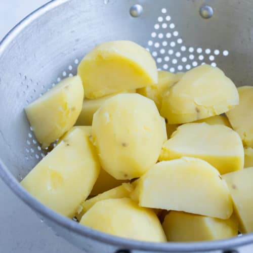

Potatoes

Boil 'em, mash 'em, put 'em in a stew
They are, indeed, precious. Also, try caramelizing them.
Ingredients
Potatoes
Salt
Steps:
Peel the potatoes, precious.
Boil them in salted water for 10-20 minutes depending on size. Stab to check for done-ness.